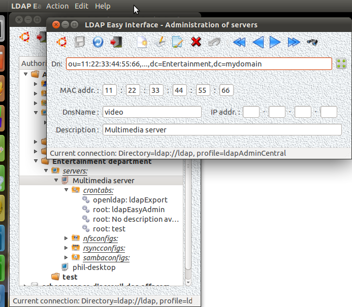

Next Previous Summary (Français - English)
This GUI allows to manage (creation,
deletion, modification and restoration) the servers definitions within
the corporate LDAP directory.
These server definitions will be then linked to the related
definitions of services, themselves managed in other specific
interfaces (for example: "rsyncFrontend" for the service definition "rsync", "sambaFrontend" for the service definition "samba", ...).
The identifier in the database directory of each server is the MAC
address of its first discovery network card. However, the MAC address
of an already defined server stays modifiable with this GUI (as well as editing rights are actually granted to the user
of the used LDAP connection) ; but the services maybe already defined
for this server will remain attached to it after changing its MAC
address ...
Like other GUIs, this screen mask is controlled by the GUI: "
controlFrontend", specialy for its current position (and display of corresponding data) in the LDAP tree:

We must now pass in the "real world" what we have defined in the LDAP directory dedicated to the administration of our Intranet.
Example of shell startup script to install on each server in the intranet to administer:#!/bin/sh
#
# GNU/LdapEasyInterface (2010 July - v1.0)
#
# Script: rc.ldapEasyInterface
# (assumes nssldap installed)
#
BIN="/usr/local/bin"
case "$1" in
"" | start | Start | START)
# setting the hostname:
echo "LdapEasyInterface: setting the hostname..." >&2
FILE="/etc/hostname"
HOST_NAME=""
[ -x "${BIN}/getHostName" ] && HOST_NAME=$(${BIN}/getHostName)
[ -n
"${HOST_NAME}" ] && echo "${HOST_NAME}" >${FILE} &&
hostname -F ${FILE} && echo "Done." >&2
# setting the dnsdomainname:
echo "LdapEasyInterface: setting the dnsdomainname..." >&2
FILE="/etc/hosts"
HOST_NAME="$(hostname)"
DNS_DOMAIN_NAME="" ; LINE_TO_ADD=""
[ -n "${HOST_NAME}" -a -x "${BIN}/getHostName" ] && DNS_DOMAIN_NAME=$(${BIN}/getHostName -d)
if ! grep -qsw
"${HOST_NAME}.${DNS_DOMAIN_NAME}" ${FILE} ; then
LINE_TO_DEL="$(grep -w
"${HOST_NAME}" ${FILE} | head -1)"
if [ -n "${LINE_TO_DEL}" ] ; then
IP="$(echo
${LINE_TO_DEL} | sed -e 's/[ \t].*$//')"
else
IP="127.0.1.1"
fi
[ -n
"${DNS_DOMAIN_NAME}" ] && LINE_TO_ADD="${IP} ${HOST_NAME}.${DNS_DOMAIN_NAME}
${HOST_NAME}"
cat <${FILE} >${FILE}.bk
if [ $? -eq 0 ] ; then
cat
>${FILE} <<@@@
${LINE_TO_ADD}
$([ -n "${LINE_TO_DEL}" ] && grep -v "${LINE_TO_DEL}" ${FILE})
@@@
echo "Done." >&2
fi fi
...
# next setting...
...
;;
stop | Stop | STOP)
;;
*) echo "Syntaxe: $0 [ start | stop ]..." >&2
esac
# End
Latest source (
20110913)
here.
After compiling:
frontend -- plugin libserver.so
or :
frontend --plugin server
or :
cp libserver.so /usr/local/bin/ ; ln [-s] /usr/local/bin/frontend /usr/local/bin/serverFrontend ; serverFrontend
Tests...
Next Previous Summary